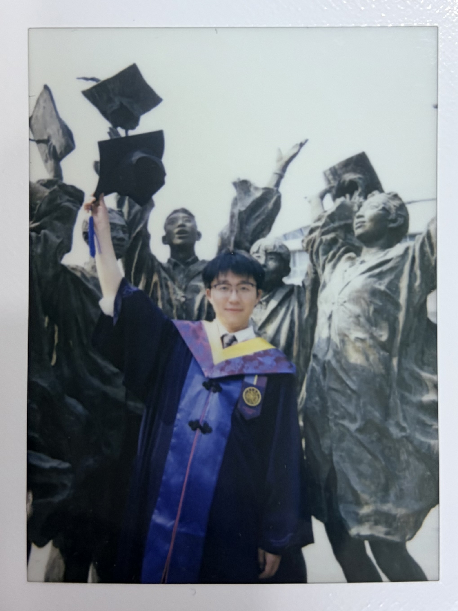

Generative Human Motion Mimicking
Tsinghua University, China & University of Cambridge, UK
Developed an algorithm using diffusion trajectory matching for controlled long-range motion generation.
Tsinghua University
Efficient AI, Computational Video, and Machine Learning

I am a third-year master student at Tsinghua University, under the supervision of Prof. Yuxing Han. I earned my bachelor's degree from Beijing Jiaotong University in 2023.
My research focuses on Efficient AI, Computational Video, and Machine Learning. From 2021, I worked on efficient physiological time series analysis based on knowledge distillation. From 2023 to 2025, I focused on efficient video computer vision systems with video motion estimation. In early 2026, I worked on controllable long-range motion generation.
I am currently focusing on efficient video understanding and generation systems. Feel free to contact me if you are interested in discussion or collaboration.
Tsinghua University, China & University of Cambridge, UK
Developed an algorithm using diffusion trajectory matching for controlled long-range motion generation.
Tsinghua University, China
Applied video motion estimation to accelerate video computer vision systems and proposed an efficient Bayer-data pipeline that removes ISP latency.
Institute of Network Science and Intelligent System, BJTU, China
Proposed multi-level and spatial-temporal knowledge distillation frameworks for lightweight EEG and physiological signal classification.
Haichao Wang, Jiangtao Wen, Yuxing Han. IEEE International Conference on Image Processing (ICIP), 2026.
Ziyu Jia, Heng Liang, Haichao Wang, Yucheng Liu, Tianzi Jiang. IEEE Transactions on Affective Computing, 2025.
Ziyu Jia, Haichao Wang*, Yucheng Liu, Tianzi Jiang. ACM SIGKDD, 2024. (* first student author)
Ziyu Jia, Heng Liang, Yucheng Liu, Haichao Wang, Tianzi Jiang. IEEE Transactions on Big Data, 2024.
Yucheng Liu, Ziyu Jia, Haichao Wang. ACM International Conference on Multimedia, 2023.
Heng Liang, Yucheng Liu, Haichao Wang*, Ziyu Jia. IJCAI, 2023. (* equal contribution)
Data Science and Information Technology
Advisor: Prof. Yuxing Han
Computer Science and Technology
Advisor: Dr. Ziyu Jia & Prof. Jing Wang